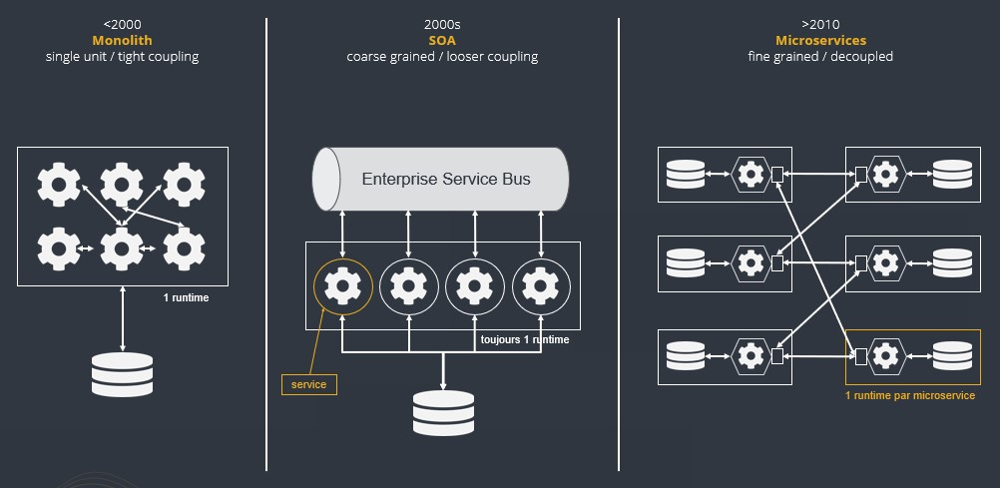

| Cet article se base sur le talk Microservices: Infinity War! Spring vs MicroProfile que j’ai donné à Devoxx France 2019 avec ma collègue Darren Boutros. |
Microservices : un rien d’histoire et de contexte
On peut voir l’architecture microservices comme une évolution l’architecture SOA (Service Oriented Architecture), elle-même créée pour pallier aux inconvénients des applications monolithiques.

-
Un des points intéressants à remarquer dans la transition SOA vers l’architecture microservices, est la suppression de l’ESB (Enterprise Service Bus).
La communication entre les services devait être la principale fonction de ce composant, mais il embarquait fréquemment une trop grande complexité métier.
Pour corriger cela, il a été remplacé par les endpoints REST des microservices.
Pour illustrer ce changement, Martin Fowler palera de "Smart endpoints and Dumb pipes" -
On constate également que l’on ne travaille plus avec un seul et unique runtime, mais avec 1 runtime par microservice, ce qui participe à garantir une de leurs principales caractéristiques : l'isolation.
L’inspiration des microservices
En 2005, Alistair Cockburn présentait l’architecture hexagonale (ou modèle “Ports and Adapters”) afin de permettre la conception d’applications pouvant être testées en isolation de leurs runtimes et bases de données.
Cela a été l’inspiration pour l’architecture microservices, dont Alistair donna ensuite la définition suivante : “An architectural style or an approach for building IT systems as a set of business capabilities that are autonomous, self contained, and loosely coupled”
Architecture hexagonale
| Le principe fondateur de ce pattern est que le métier ne doit dépendre de rien : TOUTES les dépendances vont de l’extérieur vers l’intérieur. |
Le but principal de cette architecture ne date pas d’hier, il est question de séparer clairement le métier de l’implémentation technique (notion d'isolation).
-
Tout ce qui se trouve à gauche de l’hexagone représente les composants qui ont besoin de ce dernier.
On trouve côté gauche des interfaces exposées pour les composants ayant besoin d’invoquer le modèle. On parle d'API, pour Application Provider Interfaces.
→ Les composants souhaitant communiquer avec notre métier le feront au travers d’adaptateurs qui contacteront nos API. -
Tout ce qui se trouve à droite de l’hexagone représente les composants dont ce dernier a besoin.
On trouve côté droit des interfaces exposées pour les composants que le modèle a besoin d’invoquer. On parle de SPI, pour Service Provider Interfaces.
→ Les composants avec lesquels notre métier souhaite communiquer seront contactés au travers des SPI dont les implémentations seront résolues à l’exécution et fournies par des adaptateurs.
Isolation

Comme nous le verrons plus en détail par la suite, la notion d'isolation est capitale pour les microservices, or l’isolation amène la redondance, et cette dernière, on nous a appris à la "combattre" depuis des dizaines d’années.
Rappelez-vous le principe introduit dans The Pragmatic Programmer : Don’t Repeat Yourself (DRY).
Prenons le cas de 2 classes partageant un même comportement.
Comme on nous l’a appris en programmation OO, on aura généralement tendance à sortir ce comportement commun dans une classe de plus haut niveau, qui sera ensuite héritée.
Si on change le comportement de la classe mère, on impacte donc les 2 classes filles.
Cet héritage a donc augmenté le couplage entre nos classes.
|
L’exemple précédent est… juste un exemple pour illustrer un problème classique de couplage 😅 |
Dans le cas des microservices, nous voulons éviter au maximum tout couplage, afin que ces derniers soient le plus indépendants possible. Donc, entre DRY et couplage, et isolation et redondance, la 2nd approche est privilégiée.
|
DDD et redondance
La conception des microservices plébiscite l’approche DDD (Domain Driven Design). Si vous voulez plus de détails sur ce point, je vous conseille l’excellente conférence Hexagonal at Scale, with DDD and microservices! de Cyrille Martraire, lors du Voxxed Days Microservices Paris 2018. |
Pourquoi les microservices ?
Du fait du développement d’Internet, tout le monde communique avec tout le monde, et est en concurrence avec tout le monde.
L’émergence des microservices est la conséquence de l’évolution de nos applications pour faire face à ces nouveaux besoins :
-
Complexité croissante
Les applications ne se limitent plus au seul data center de la compagnie, mais communiquent avec les services externes d’autres providers sur tout le globe. -
Besoin de livrer de plus en plus vite
Quand la concurrence est partout, il faut pouvoir faire évoluer son produit rapidement, et donc être capable de livrer des nouvelles fonctionnalités au plus tôt, sans devoir attendre de release complète. -
Besoin de performance et de scalabilité
Il faut être capable de s’adapter aux montées en charge d’un marché potentiellement mondial : très vite scaler sur de multiples serveurs, et libérer les ressources tout aussi vite quand le pic de charge est passé. -
Doivent être toujours disponibles
Du fait de la compétition de plus en plus sauvage, si votre application tombe, votre client part chez le concurrent… Votre application doit être résiliente, et être capable de gérer les pannes (on parlera pour cela de "Design for Failures").
Pour adresser ces problématiques, des sociétés comme Netflix, Amazon, eBay commencèrent à casser leurs monolithes en services :
-
de petite taille, chacun ne remplissant qu’une fonction
-
pouvant être déployés indépendamment les uns des autres.
Ces services distribués, petits, simples et découplés permirent aux applications de devenir scalables, résilientes et flexibles.
→ Ils prirent progressivement le nom de microservices.
| La découpe des applications monolithiques en microservices est donc le Use Case d’origine des microservices. |
Principaux Use Cases
-
"L’originel (le passé)" : Migration d’un monolithe vers une architecture microservices
-
"L’actuel (le présent)" : Développement d’applications cloud-native
La transition aux applications Cloud-native est bien expliquée dans le Spring Microservices in Action p5 :
You start building microservices because they give you a high degree of flexibility and autonomy with your development teams, but you and your team quickly find that the small, independent nature of microservices makes them easily deployable to the cloud.
Approche Cloud-native
Les microservices sont maintenant l’architecture "par défaut" pour bâtir des applications Cloud-native.
L’approche Cloud-native a les grandes caractéristiques suivantes :
-
Architecture microservices : implique de multiples équipes indépendates, travaillant à l’amélioration du système.
-
Continuous Delivery : Le CD représente un process d’automatisation permettant aux développeurs de déployer rapidement vers les environnements de prodution
-
DevOps : La culture DevOps rapproche développeurs et OPs, et les aide à livrer une meilleure valeur partagée au client.
-
Containerized : La notion de container est capitale, car ce sont ces derniers qui permettent aux applications de pouvoir être déployées n’importe où.
Ce qui importe n’est pas OU ces dernières sont déployées, mais COMMENT elles le sont.
Voici une définition de l’approche Cloud-native que j’aime particulièrement :
Cloud native is an approach for building applications as micro-services and running them on a containerised and dynamically orchestrated platforms that fully exploits the advantages of the Cloud computing model.
On y parle d’exploiter les avantages qu’offre la conception dans le Cloud, afin de répondre aux nombreuses contraintes inhérentes au développement de microservices.
En effet, le développement de ces derniers est complexe, principalement car ils sont nombreux.
On ne développe jamais un mais DES microservices, dont il faut assurer la communication, le cycle de vie, le monitoring, etc etc.
Tout cela nécessite la mise en place d’un environnement complexe, on parlera de capability model.
|
Ce terme de capability model n’est pas si courant dans la littérature sur les microservices, mais je le trouve très approprié. A la base, je l’ai trouvé dans l’excellent article A capability model for microservices de Rajesh RV, l’auteur de Spring Microservices. |
Capability model
La conception de microservices ne se limite pas au simple code du service lui-même, l’environnement, le capability model comme nommé précédemment, est essentiel.
Faisons apparaître ses "capabilities" progressivement :
Microservice "core"
Rappelons les caractéristiques des microservices :
-
"petits" : comprendre par là qu’ils n’assurent la responsabilité que d’un point précis d’un domaine métier.
-
faiblement couplés : donc indépendants, et devant être déployés indépendamment les uns des autres.
Pour aider à cela, il est préconisé que chaque microservice dispose d’une persistance dédiée. -
distribués
API
Ce dernier va très rapidement devoir communiquer avec d’autres microservices, ce qui se fera au travers d'API.
Service Discovery
Afin que nos microservices puissent se trouver les uns les autres, ils s’enregistrent auprès d’un Service Discovery.
Load Balancer
Dès lor que vous avez plusieurs instances d’un même microservice, vous avez besoin d’un Load Balancer pour distribuer le trafic et la charge.
API gateway
Il faut proposer un point d’entrée unique pour tous vos services.
C’est le rôle L'API gateway, qui, de ce fait, est également le lieu idéal pour implémenter certains aspects transverses comme le routage statique et le routage dynamique.
Par exemple, en fonction de certaines données de la requête arrivante, on dirige une population de beta-testeurs sur une version spécifique de certains services.
Communication entre microservices
Les microservices communiquent entre eux avec un protocole léger et indépendant de leur technologie.
la communication peut être synchrone ou asynchrone.
Synchrone
Implémentée au travers d'appel REST en HTTP.
Ce type de communication est généralement privilégié pour des services externes.
Il est en effet idéal pour des requêtes externes, car permettant de gérer facilement les intéractions temps-réel avec un client.
Néanmoins, son inconvénient est d'augmenter le couplage entre 2 microservices.
Asynchrone
Communication Event Driven, implémentée via la mise en place d’un bus d’évènements (protocoles d’envoi de messages asynchrones AMQP, STOMP, MQTT et outils comme RabbitMQ, ActiveMQ), ou d’un mécanisme de Pub/Sub (Kafka est le roi incontesté de ce domaine…).
Ce type de communication est privilégié pour les échanges relatif à la "mécanique interne" d’une fonctionnalité rendue par un ensemble de microservices (en d’autres termes, la "plomberie", ce qui n’est pas exposé au client)
Dans ces cas, le client n’attend généralement pas de réponse immédiate, voire n’en attend tout simplement pas.
Ces échanges étant plus répandus que les besoins d’intéractions temps réel, la communication asynchrone est la plus fréquemment rencontrée pour les microservices.
Ses avantages sont :
-
meilleur découplage des microservices
Attention toutefois, on peut devenir dépendant (donc re-couplage) de la version du type de message.
Exemple: JSON ne supporte pas nativement le versioning, contrairement à Avro (poussé par Kafka) -
meilleure résilience : le message reste dans la queue même si le consommateur est down.
-
meilleure scalabilité : pas besoin d’attendre une réponse du consommateur du message.
-
meilleure flexibilité : émetteur et consommateur ne se connaissent pas, on peut donc ajouter de nouveaux consommateurs sans impacter l’émetteur.
Côté inconvénients :
-
il faut se méfier de la gestion de l'ordre des messages.
-
debugging plus compliqué : l’exécution n’étant plus linéaire.
Configuration management
Vos microservices étant nombreux, vous n’allez pas gérer la configuration de chacun d’eux séparemment, il va donc falloir centraliser leur configuration.
Design for failure
Les microservices sont des systèmes distribués, pour éviter tout problème de réseau, ou que la défaillance d’un service (ou instance de service) n’impacte les autres, vous devez penser à la résilience de l’application dès sa conception, ce qu’on appelle le Design for failure.
Voici les principaux patterns à mettre en place :
-
circuit breaker : pour éviter que l’on continue d’appeler un microservice défaillant, permet le fail fast.
-
fallback : propose un comportement alternatif en cas de défaillance d’un microservice (exemples : accès à une autre source de données, queueing de la requête, etc.)
-
bulkhead : on sépare les appels aux ressources distantes dans des thread pools différents (pour éviter qu’un service défaillant ne vampirise les ressources)
Logging et tracing
Notre bon vieux monolithe a cédé la place à plusieurs dizaines ou centaines de microservices, en conséquence, la gestion des logs et du tracing est devenue bien plus compliquée.
Chaque microservice a ses propres logs, et une transaction utilisateur peut impliquer plusieurs de ces derniers.
Les patterns suivants permettent de ne pas se noyer dans cette masse de données :
-
log correlation : via un ID de corrélation, permet de suivre les logs d’une transaction entre différents services
-
log aggregation : regroupe toutes les logs en 1 même persistance
-
tracing distribué : permet de visualiser le flux / workflow d’une transaction utilisateur au travers des différents microservices
Sécurité
-
Authentification : permet de savoir QUI veut se connecter à vos services
-
Autorisation : permet de savoir si l’utilisateur, précédemment authentifié, a bien le droit d’entreprendre l’action qu’il souhaite (gestion de droits)
-
Délégation d’accès : pour éviter que le service client n’ait systématiquement à représenter ses credentials pour chacun des services impliqués dans la transaction
Patterns de build et de déploiement
Nos microservices sont nombreux, on ne va pas pouvoir chacun les déployer, ou les redémarrer (gestion de panne), "à la main", d’où la mise en place des patterns suivants :
-
CI/CD : implique la mise en place d’un pipeline de build et de déploiement automatisé.
-
Infrastructure as code : permet de considérer le provisioning des nos services comme du code pouvant être géré par un gestionnaire de sources.
-
Immutable infrastructure : Une fois qu’un service est déployé, l’infrastructure sur laquelle il tourne ne doit plus pouvoir être modifiée par un humain.
Cela renforce la stabilité du système, en garantissant qu’aucune modification ne peut se retrouver en PROD, dans le code déployé, mais nulle part ailleurs…